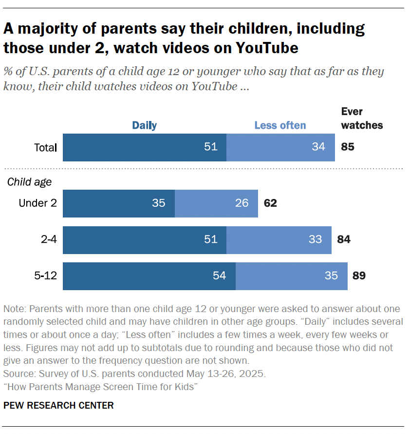
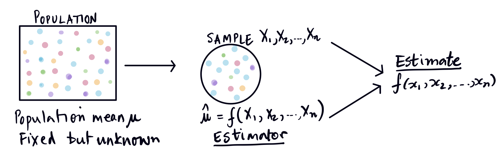
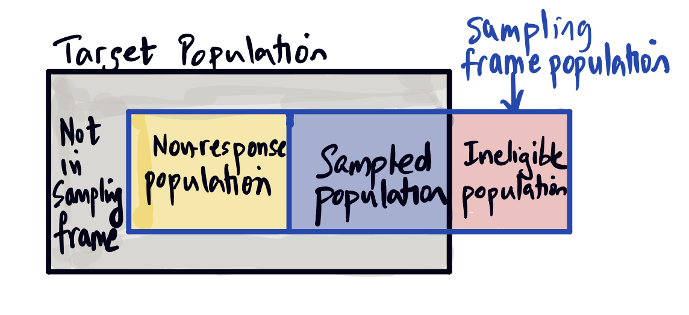

Estimation
Corresponding reading
- Chapter 1.4, 4.1 of Agresti and Kateri (2021)
Questions/Goals for this Module
- What is an estimator?
- What are we estimating?
- What do we mean when we “model” our data? - What is a parametric model?
- How does the context of the data change how we think about modeling data?
These lecture notes weave in material from Shobhana Stoyanov’s lecture notes from Spring 2026, Lectures 2 & 3. You are welcome to look at her material directly as well.
An Example
Let’s return to our simple example from the first day of class: a survey of US Parents in May of 2025 of 3,054 eligible parents who responded (out of 6,287 who were asked)1

We want to use this data on 3,054 parents estimate something about a larger population. We observe on this data 51% of 2-4 yrs old and 54% of 5-12 yrs old watch YouTube daily.
We want to estimate what these numbers would be in the entire US if we were to question all parents. To actually find that number exactly would require a census of all US parents, so using this data as a stand-in for the entire US can only be an estimate.
The Basics: Notation
Let’s introduce some notation to talk about our data. We will assume we have \(n\) observations or units. For each observation, we observe (usually numerical) information. We will let our observed data be
\[X_1,\ldots, X_n\] We will often talk about an observation \(i\) and it’s data \(X_i\), where \(i\) can be any integer between \(1,\ldots,n\).
\(X\) is not the only notational option; in different settings we might use \(Y\) or \(Z\). But it is traditional to use letters at the end of the alphabet and capital letters to indicate that it is a random variable.
Specific Cases:
What if I observe two data points for each observation, like income and GPA? Well, \(X_i\) can be a vector, e.g. \(X_i\in R^2\)
What if my data is not numerical, but what category the observation falls into (e.g. color of hair, or what state someone is from)? There are various options for converting these categories into numbers, for example I can give each of my possible \(K\) categories numerical values like \(1,\ldots,K\), and then \(X_i \in \{1,\ldots,K\}\).
What is estimation?
Estimation involves using a sample to compute an estimate of a population parameter.
- Estimator: The function (or algorithm) that maps sample data to a number.
- Estimate: The actual observed value after applying the estimator on the sample (observed) data.
- Population Parameter: A feature of the population that we are estimating, such as the mean, the median, or the

This is a subtle distinction. It is related to the distinction in probability of a random variable and it’s realization. In probability we often use \(X\) (capital letter) for a random variable, and it’s particular realization as \(x\) (lowercase). Similarly, an estimator is generally written as a function \(f\) of \(X\) to indicate it’s generic, the estimator is when you plug in \(x\) you actually observe into the function \(f\).
What do we mean by the population parameter? There are two ways to think about this.
Sampling Perspective
In this perspective, our population is the larger set of units from which our observed units were drawn. This is the example of our parent survey above.
Then a population parameter is some summary value of the population that we don’t know, like the proportion of all US parents (or much more complicated characteristics!) or the average income.
More mathematically, there is an \(X_i\) value for every element in our population of size \(N\), \[X_1,\ldots,X_N\] If we want to estimate to population mean, that literally means we want to estimate \[\frac{1}{N}\sum_{i=1}^N X_i.\]
This interpretation makes a lot of sense in settings where the selection of particular units to measure is a significant aspect of our data collection – even if the selection process is non-random or unknown! It allows us to think quite concretely about our sample, and in what ways it might have been sampled from a population that is actually different from the target population. For example, we might have missed parts of the population we wanted to sample from due to, for example, some units not responding or being unavailable. There also might be part of the target population that we’d like to know, but that our sampling mechanism just doesn’t reach. There can often be a gap between the population you want to generalize to, and the one that your data makes possible.
This is a common visualization of these components, distinguishing the
- the sampling frame population–the population that is included by our sampling mechanism
- the sampled population – the population our usable data came from
- the target population – that we wanted to make estimates about

Exercise/Question
Think about these components for the Pew Survey. Assume for the purposes of the question, that parents were contacted via calling a sample of telephone numbers. What might these different populations correspond to?
Random Samples
How specifically are these samples collected from the population? We’ve seen they can be collected in many ways, but the gold standard is to randomly select units from the population, where the investigator selects a unit based on a known, but random mechanism.
Definition 1 Probability sampling is a method of selecting a sample through a defined random process in which every (eligible) population unit has a known, positive chance of inclusion. A random sample is the resulting sample from performing probability sampling.
We do not call it a random sample if these pieces are not in place; you otherwise often will call it a convenience sample, meaning the selection was not defined by a known random mechanism.
The most simple and widely known mechanism is a simple random sample
Definition 2 A simple random sample (SRS) is a random sample where every eligible unit in the population had equal chance of being selected.
Another way of stating this is in a SRS of size \(n\), every subset of the population of size \(n\) has equal probability of being selected.
The sampling mechanism for construction a SRS is also known as sampling without replacement, because they way you can create a SRS is to repeatedly draw from the population with equal probability for each unit, but without replacing the samples you previously drew.
General Modeling Perspective
However, the sampling perspective doesn’t make a lot of sense for experimental data in the physical sciences, for example, like our spring data from the first module.
We can generalize to assume the data comes from a probability distribution, i.e. they are random in some way. We can write this as \[(X_1,\ldots,X_n)\sim \mathcal{F}\] where \(\mathcal{F}\) is a unknown distribution on \(n\) variables.
Then a more general definition is that our population parameter is some feature of the unknown data generation process \(\mathcal{F}\), like the expectation of that distribution. This is a more general, mathematically rigorous definition that we can make work for any data. But notice how much it divorces you from thinking about how your data was collected!
Exercise/Question
Consider our spring example from the first class. There is no obvious sampling mechanism described. But what kinds of problems in the data collection might you have that could lead to problems in making conclusions about the process that generated the data?
Exercise/Question
Go through the scenarios of data collection from module 1:
- What might be the population you are interested in? There may be more than one answer: how does that affect whether this data will be good for answering that question?
- If there is sampling involved (random or not), describe it and consider the target population, sampled population, etc and how those differences might cause problems.
- What kind of parameter(s) would you be estimating in these examples?
Known randomness is a subcase
Note that when we have a known random process, then this is simply a subcase of the general setting.
For example, if we have units selected by random sampling, then \(\mathcal{F}\) is the known random sampling mechanism that determines the random sample we see. The unknown aspect of \(\mathcal{F}\) is the unknown values of the entire population – we don’t see that.
Similarly, if we have a given set of units randomly assigned to different treatments, then \(\mathcal{F}\) is the known random assignment mechanism, while the unknown aspect is how the units responds to the treatments.
Some common estimators
There are common simple estimators that come up all the time. They form part of what are called descriptive statistics of data, in that they estimate the center and spread of data and are useful even separate from trying to estimate a particular population parameter. They will reappear throughout the course – we will see that there are multiple ways that they can be justified as “reasonable” estimators.
Estimate of the Mean of the Population
Suppose we have continuous data \(X_1, \ldots, X_n\) from a population distribution \(\mathcal{F}\). We assume that a draw of an observation \(X\) from \(\mathcal{F}\) will always have the same expected value, \(\mu\), \[E(X)=\mu\] We can call \(\mu\) the population mean, and then we want to estimate it from our data, \(X_1\ldots,X_n\).
A common and intuitive estimate is to simply take the mean of our data, \[\hat{\mu}=\hat{\mu}(X_1,\ldots,X_n)=\frac{1}{n}\sum_{i=1}^n X_i=\bar{X}\]
Estimate the Variance of the Population
Suppose we have continuous data \(X_1, \ldots, X_n\) from a population distribution \(\mathcal{F}\). We assume that a draw of an observation \(X\) from \(\mathcal{F}\) has the same expected value, \(\mu\) and the same variance \[E(X)=\mu, var(X)=\sigma^2\] Then the standard estimator for this is \[S^2=\frac{1}{n-1}\sum_{i=1}^n (X_i-\bar{X})^2\] Notice how this mirrors our definition of variance, \[var(X)=E[(X-\mu)^2]\]
You will sometimes see another estimator of variance that comes up this semester, \[\hat{\sigma}^2=\frac{1}{n}\sum_{i=1}^n (X_i-\bar{X})^2\] This mirrors our defintion of variance even more closely (replacing the expected value with the mean, rather than a \(1/(n-1)\)). However, this is never the preferred estimate, as we will see, because it is biased, but it does come up, for example as a MLE estimator.
However, the difference is just multiplying by \(\frac{n-1}{n}\), which is generally a number very close to one, so the difference is usually negligible unless the sample is very small. We often will not have confidence in that level of precision given the other assumptions that we usually have to make in our analysis.
Estimate the Probability of Success
Suppose instead we have binary response data \(X_1, \ldots, X_n\), meaning each \(X_i\) takes on one of two values. These can be any value (“spam”/“not-spam” or “agree”/“disagree”), but we will encode the two values as either 0 or 1. We will often talk about 1 as “success”, but this is totally arbitrary.
We again assume that a draw of an observation \(X\) from \(\mathcal{F}\) will always have the same probability of success \(p\), \[P(X=1)=\pi\in (0,1)\] Notice that \[E(X)=P(X=1)=\pi,\] so in fact, we are just estimating the population mean again.
Then the standard estimate of \(\pi\) is given by the proportion of 1s in the data, \[\hat{\pi} =\hat{\pi}(X_1,\ldots,X_n)=\frac{\# \{X_i=1\}}{n}\] Notice that since each \(X_i\) is either 0 or 1, the mean \(\bar{X}\) is just the proportion of 1’s in the data, \[ \hat{\pi} = \frac{1}{n}\sum_{i=1}^n X_i = \bar{X}. \]
Exercise/Question
Show that if we apply the estimate \(\hat{\sigma}^2\) above for our binary data, we get \[\hat{\sigma}^2=\hat{p}(1-\hat{p})\] Why is this intuitive? What would \(S^2\) be, instead?
Notation
It is important to notice the standard notation introduced here. The unknown population parameters are generally Greek letters, while the estimate of that population is designated by putting a “hat” over the population parameter. For example,
- Population mean: \(\mu\)
- Estimate of population mean: \(\hat{\mu}=\hat{\mu}(X_1,\ldots,X_n)=\bar{X}\)
But these are two quite different quantities! \(\mu\) is an unknown constant, while \(\hat{\mu}=f(X_1,\ldots,X_n)\) is a function of our \(n\) data points and thus a random variable!
You will see there are deviations to this rule, particularly in really common settings, like using \(S^2\) for the estimate of variance. And sometimes we just say \(\bar{X}\) and not \(\hat{\mu}\).
What to estimate
Notice that in my general modeling perspective, to even describe what I want to estimate, I am already making assumptions about \(\mathcal{F}\).
For example, I said I would use the sample average to estimate the population mean. But if my data generation process is a random number collected over time, like the temperature, then the expected value of that number changes over time. So it may make no sense to talk about “the” mean of my population. We can talk reasonably about the average temperature in June; it’s less clear that the average temperature over a six month period is a relevant number. So what data I have will dictate what it makes sense to estimate.
This is why in introducing common estimators above, I made assumptions which made each task reasonable. But these assumptions cannot be validated without going back to the specifics of your data.
For each of the above “standard” estimators, think of example situations where the parameter being estimated is inappropriate (this is not a question about whether the estimator I gave above is a good choice!)
General modeling
We said previously that if we don’t have the kind of precise information we have from a random sample, we will define our notion of population to be the unknown probability distribution \(\mathcal{F}\) that created my data.
If we leave it at that, we’ve basically gone no farther than saying the \(X_i\) are random. \(\mathcal{F}\) could be any distribution, there could be any kind of relationship between the \(X_i\), etc. It gives us no idea of what a future data point might look like or in what way the data might resemble each other. Ultimately, we cannot draw any general conclusions without additional assumptions on the data that, at a minimum, allow us to assume this data has some relationship to each and share some features in common that we are interested in exploring. Ultimately assumptions narrow down what is unknown about a distribution, leaving us with less to have to try to determine directly from the data. We often call this modeling my data generation process.
Here are examples of some basic assumptions we might add; this can give you a sense of how little we’ve will have otherwise assumed so far:
- Density We can assume \(\mathcal{F}\) has a density \(f(x_1,\ldots,x_n)\) – and yes, this is an assumption. Not all distributions have a density!
- Independence We can assume the \(X_1,\ldots,X_n\) are independent from each other. This is probably the most common assumption in the entire field of statistics. It is so common, that people frequently state it automatically without even thinking whether it makes sense. In fact, data collected from a SRS (frequently our gold standard) are not even independent!
Furthermore, there are many important settings where this assumption doesn’t make sense, for example when data is collected over time, like stock market. And in our website product review example, it’s not clear why independence would make sense since the comments very well might be influencing each other.
- Assumptions about shared moments (or other features) We could assume that the \(X_i\) share the same moments.2 For example, \[E(X_1)=\ldots=E(X_n)\text{, or }var(X_1)=\ldots=var(X_n)\] Notice if we are going to do this, then we might want to make our life easier and introduce notation to describe these shared values, e.g. \[E(X_i)=\mu\text{, or }var(X_i)=\sigma^2.\] This is a common point of interest – can we estimate the data’s shared mean or shared variances?
- Assumptions about the components of \(X_i\). If \(X_i\) is a vector, like our income and GPA, we could assume that there is a relationship between them, e.g. \[E(X_i^{income})=\beta_0+\beta_1 E(X_i^{GPA}),\] then the average of one is related to the average of the other.
Noticed this isn’t the same thing as saying \(E(X_1)=E(X_2)\ldots=E(X_n)\) – the observations could each have different means, but their components are related and that relationship is the same across observations.
Notice that in these last two examples I have introduced new values:
- \(\mu\) and \(\sigma^2\) for the shared moments
- \(\beta_0\) and \(\beta_1\) for the shared relationship
These are examples of possible parameters of the distribution \(\mathcal{F}\) we might want to estimate. This is often part of modeling your data – introducing or defining the parameters of interest.
Parametric Models
The above are assumptions about aspects of the distribution \(\mathcal{F}\). We can go even further and assume a distributional form for the data. I could for example assume that the unknown random process is one of the many distributions you learned about in probability, e.g.
- Normal: \(\mathcal{N}(\mu,\sigma^2), \sigma^2>0\)
- Gamma: \(Gamma(\alpha,\beta), \alpha>0, \beta>0\)
- Poisson: \(Poisson(\lambda), \lambda>0\)
- Bernoulli: \(Be(p), p\in(0,1)\)
- Binomial: \(Bin(n,p), p\in(0,1)\)
Notice these are are distributions that have parameters that define them. Hence, we call them parametric models for the data. Each one of these can more properly be called a parametric family, meaning that they are a class or set of distributions that share the same form.
Importantly, I haven’t assumed I know the parameters – if I already knew the parameters, I wouldn’t need to collect data. Instead, what we mean by assuming it is normally distributed is that we assume \(\mathcal{F}\) is in the parametric family but with the specific values of the parameters unknown. So while we have narrowed down what is unknown to a small set of parameters to estimate, there’s still something left to figure out from our data!
Parametric modeling of our data is when we assume that our data comes from a specific parametric family.
Example
We can return to our example of visitors to a website. We have records of the number of visits to the website in 10min intervals – this is our data \(X_1,\ldots,X_n\) (which will be counts). A parametric model for this data might say that each \(X_i\) is distributed \(Poisson(\lambda)\), \[X_i\sim Poisson(\lambda).\] In other words, we have chosen to model our data as being in the Poisson parametric family with unknown parameter \(\lambda\).
Notice that we’ve said how each \(X_i\) is distributed, but we haven’t thought about how they are related to each other, specifically whether they are independent from each other or share a dependency structure. Deciding on a dependency structure is a key component of any modeling of data.
The simplest option would be to say they are all independent of each other, which does not make it the right decision. Independence is an easy modeling choice, and we will frequently make these kind of modeling assumptions in what follows. But these are assumptions and it’s not obvious that they are true!
When we further assume they are all from the exact same distribution, we will say that the data are independent and identically distributed often called \(i.i.d\). This can be written many ways e.g. \[X_i\stackrel{i.i.d.}{\sim} Poisson(\lambda)\] or \[X_1,\ldots,X_n\:\text{are}\: i.i.d.\: Poisson(\lambda)\]
The best way to assess your assumptions is to think deeply about where the data is coming from.
Exercise/Question
Think through the website visitors example and the Poisson model we’ve described above. Do you see any problems with these assumptions?
Random Samples
Notice that if we have a random sample, we actually know a lot about the probability structure of our data, so we don’t have to make these assumptions (or not as many of them).
For example, because we know how we sampled our data from the larger population, we will know the dependency structure between our \(X_i\). In particular, if we have a simple random sample (i.e. sampled without replacement from our population), then we can calculate the covariance of two elements of our sample, \(X_i\), \(X_j\). And in fact data from a SRS are not independent! This is because we sampled from a finite population and since you don’t sample with replacement, knowing \(X_i=x\) tells you something about what choices are left for what \(X_j\) can be.
Alternatives to Parametric Models
Can we avoid parametric models? We often don’t need to know the full distribution of the data, but enough to do specific tasks, like give statements about how much confidence we have in an estimate. There are methods that allow us to do this, but they still have assumptions.
We will learn about these more later. But it’s helpful to think about two classes of data which we’ve introduced earlier
- Known randomness This is data where the investigator inserted controlled randomness (like our random surveys or interventions). We will see that knowing this information allows us to perform statistical analyses that do not require any parametric models – only knowledge of the randomness we inserted.
- Unknown randomness We will see methods (requiring computers) that can accomplish statistical analysis tasks that don’t depend on parametric models. Basically, you can estimate specific aspects of the data generation process by resampling from your data in different ways. This doesn’t mean it’s assumption free (for example you still generally need independence, amongst other things). We will also see that in situations where the assumptions are satisfied, these resampling methods often come to similar conclusions as common parametric modeling choices.
Ultimately, for any statistical analysis it will be important to understand when your results are sensitive to your assumptions – and to which part of your assumptions. This can be described as robustness. For example, in many settings, the statistical analysis is more sensitive to the assumption of independence than of the specific parametric model!
Why bother with parametric models?
If alternative to parametric models exist, why are we going to bother with parametric models? That is a question that can prompt large debate!
Generally, writing down a model (whether fully assuming a parametric distribution or not) can allow an investigator to be precise mathematically about what they are doing. Parametric models can be good starting point for thinking about data problems, particularly complex problems. We will see that there are “out-of-the-box” strategies for creating new estimators and other inference procedures in the context of parametric models, and thus they can be helpful for thinking how to tackled a new problem, or adjust existing techniques for a new wrinkle. Parametric models also immediately provide a strategy for simulating data, which can be helpful to get an understanding on how methods work.
We will see that non-parametric strategies also have assumptions and situations in which they perform better, and once you satisfy them, it is not uncommon to discover the non-parametric methods are close to a standard parametric model. Putting that together with the ease of having out-of-the-box solutions that don’t require extensive compute time for common scenarios, you will find parametric models are still widely used (and reported in scientific publications, for example).
Finally, we would note that dependency in your data can sometimes basically require parametric models to handle the dependency correctly and get valid results. As we said, independence is a strong assumption.
Thus parametric models still have a large place in statistical thinking and methodology development, even if in practical data analysis, practitioners are now much more likely to use non-parametric methods in many situations.
References
Footnotes
https://www.pewresearch.org/internet/2025/10/08/parents-kids-screens-methodology/↩︎
indeed saying the \(X_i\) have moments is an assumption, because not all distributions do.↩︎